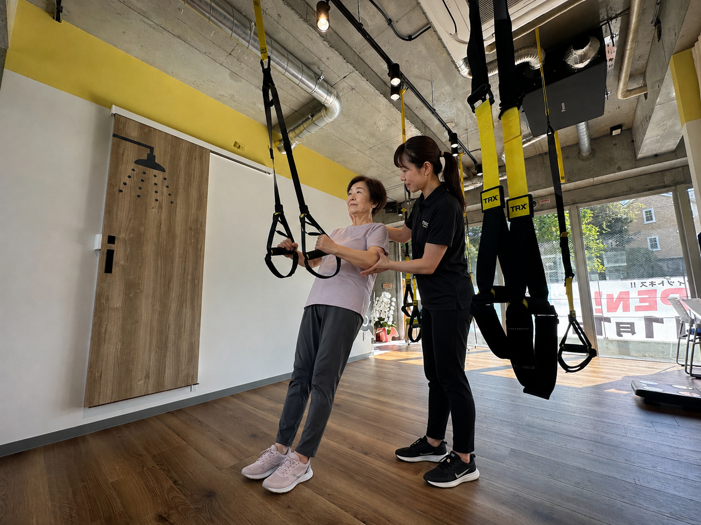
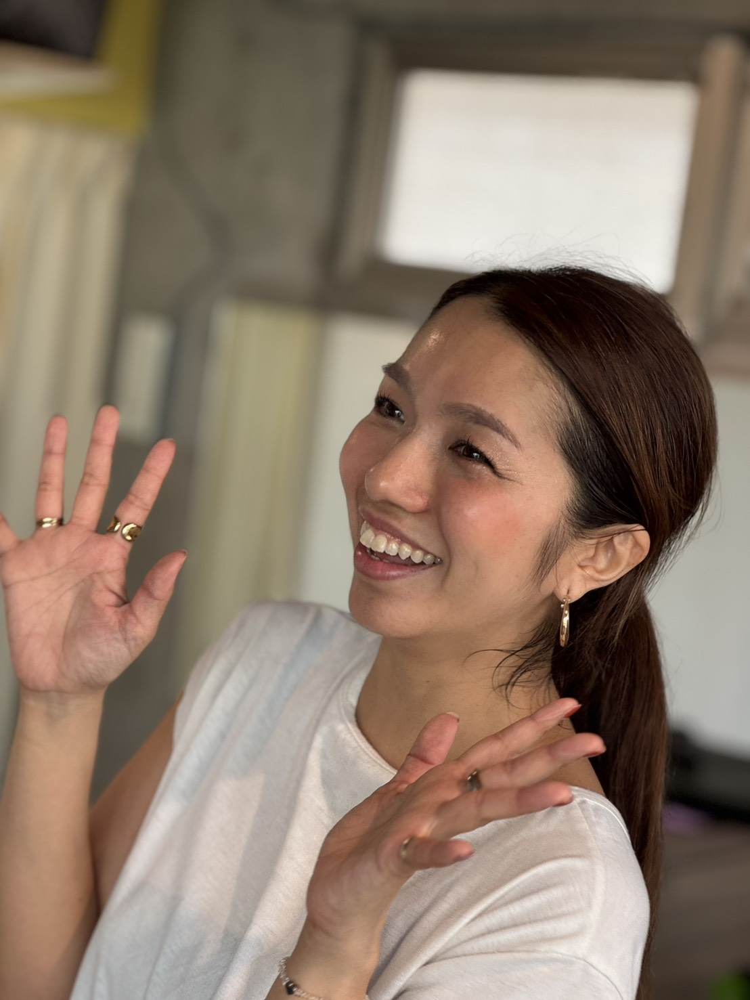

町田・南大沢で、
自分のペースで続けられる運動を。
べるフィットは、一人ひとりの生活リズムに合わせて運動を続けられる施設です。平日夜間・週末に通えるナイト会員、女性向けプログラム（シード）、介護保険で通える「保険が使えるジム」（リーフ）まで、3つの通い方をご用意しています。

生活リズムに合わせて選べる、
3つの通い方
働きながら運動を続けたい方も、女性同士で気兼ねなく通いたい方も、介護保険で通いたい方も。あなたのリズムに合った通い方をお選びいただけます。
日中の流れ（4部制）
日中は4部制です（送迎を含めて1回90分・運動は約60分）。ナイト会員は平日の夜間帯や週末に、自分のペースで利用できます。曜日・時間帯ごとに空き状況が異なります。
※各部とも、送迎を含めて約90分・運動は約60分です。

はじめての方も、
安心して続けられる理由
-
国家資格を持つスタッフ
健康運動指導士や鍼灸マッサージ師など、専門職が安全で無理のない運動をご案内します。
-
送迎があるから通いやすい
送迎を含めて1回90分。ご自宅までの送り迎えがあるので、通うこと自体に不安がある方も続けられます。
-
少人数で、一人ひとりに合わせて
少人数で運動を行うため、体力やお身体の状態に合わせて無理なく進められます。同じ顔ぶれで通ううちに、自然と交流も生まれます。
国家資格を持つスタッフが、
運動を支えます
べるフィットでは、健康運動指導士や鍼灸マッサージ師などの専門職がご案内します。お身体の状態をうかがいながら、その日の体調に合わせて無理のない運動を組み立てます。「運動はひさしぶり」「うまくできるか不安」という方も、そばで見守りながら一緒に進めます。

お一人おひとりの体力やお身体の状態を見ながら、無理のない運動メニューをご提案します。フォームの確認や声かけを大切にしています。
身体のこわばりや動かしにくさをうかがいながら、その日の体調に合わせて運動の強さを調整します。気になる部分のご相談にも応じます。
送迎から運動、お帰りまで、安心して過ごしていただけるようにそばで見守ります。はじめての方の不安にも、ゆっくりお付き合いします。
※ 担当するスタッフは曜日・時間帯によって異なります。
まずは見学・体験から
ご自身に合うかどうか、まずは見学や体験でお確かめいただけます。料金や通い方は、お身体の状態やご希望をうかがったうえでご案内します。保険が使えるジム（リーフ）をご検討の場合は、介護保険の利用状況に応じてご説明いたします。
通っている方の声
3つの通い方それぞれで、無理なく続けていらっしゃる方がいます。実際に通っている方のお声をご紹介します。
仕事帰りに寄れる時間に開いているのが、私には合っていました。日中はとても通えませんが、夜なら自分のペースで続けられます。週の終わりに身体を動かすのが、いつの間にか習慣になりました。
町田市・50代男性
同性の方ばかりなので、気兼ねなく通えるのがありがたいです。運動だけでなく、おしゃべりも楽しみのひとつ。ここで顔なじみの友人ができて、出かける理由が増えました。
南大沢・60代女性
送り迎えをしてもらえるので、家族も安心して送り出してくれます。その日の体調に合わせて運動を加減してもらえるのも心強いです。通うこと自体が、毎週の楽しみになっています。
町田市・70代女性（送迎を利用）
※ 個人が特定されないよう、お住まいの地域と年代でご紹介しています。
アクセス
東京都町田市木曽東4-9-14 Mビル2階
送迎エリアや、お車・公共交通機関でのアクセスは、お電話またはお問い合わせフォームよりお気軽にご確認ください。
よくあるご質問
通い始める前によくいただくご質問をまとめました。ここにないことも、お電話やお問い合わせフォームでお気軽にご確認ください。
体験や見学はできますか？
はい、見学・体験を受け付けています。施設の様子をご覧いただいたり、マシンを試していただけます。お電話またはお問い合わせフォームからお申し込みください。どの通い方が合うか分からない段階でも構いません。
送迎はありますか。エリアはどこまでですか？
保険が使えるジム（リーフ）の日中の利用では、ご自宅までの送り迎えがあります。送迎を含めて1回90分です。対応できるエリアはお住まいの場所によって異なりますので、お電話でご確認ください。
「保険が使えるジム」とは、どういうものですか？
介護保険の総合事業を使って通える運動の場のことです。退院後も専門職のもとで運動を続けたい方や、身体機能の維持を図りたい方にご利用いただいています。介護保険の利用状況に応じてご説明しますので、ご家族やケアマネジャーの方からのご相談も歓迎です。
何歳くらいの方が通っていますか？
通い方によってさまざまです。夜間・週末に通うナイト会員は働く世代の方が多く、女性向けプログラム（シード）や保険が使えるジム（リーフ）は60代・70代の方も多くいらっしゃいます。同じくらいの世代の方と一緒に、無理なく続けていただけます。
運動の経験がなくても大丈夫ですか？
はい、大丈夫です。国家資格を持つスタッフが、お一人おひとりの体力やお身体の状態に合わせて、無理のない運動をご案内します。少人数で行うため、はじめての方もそばで見守りながら一緒に進めます。
持ち物は何が必要ですか？
動きやすい服装と、室内用の運動靴、汗ふきタオル、お飲み物をご用意いただくと安心です。詳しくは見学・体験のときにご案内します。